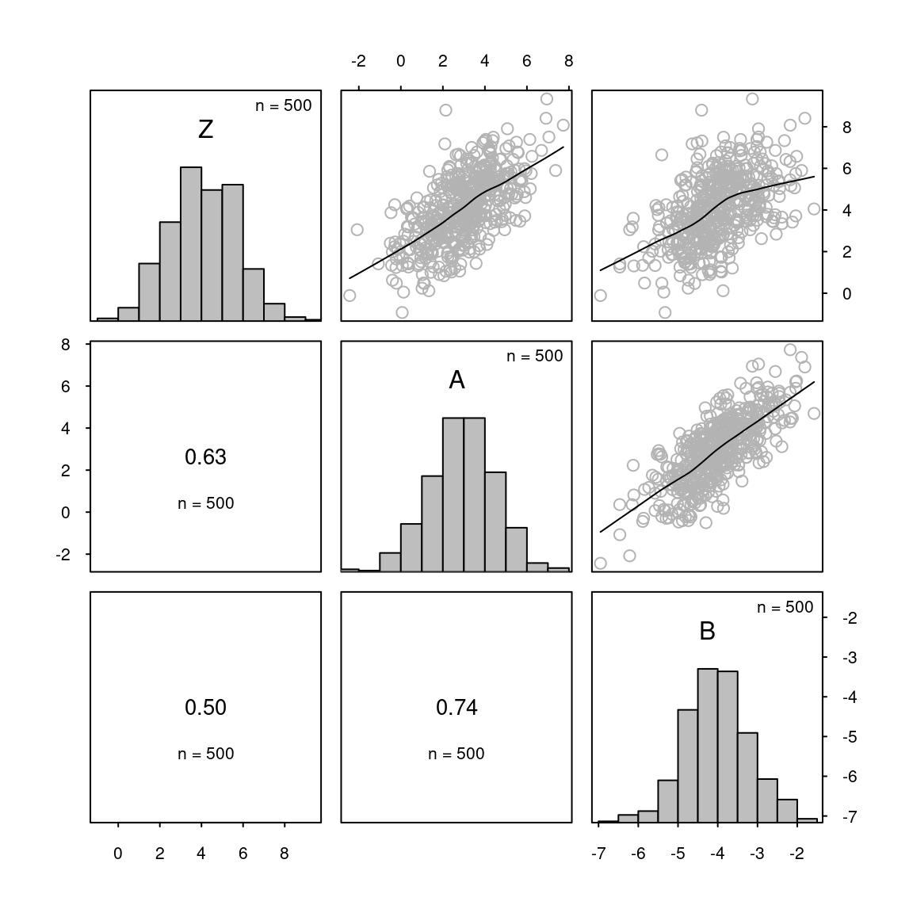
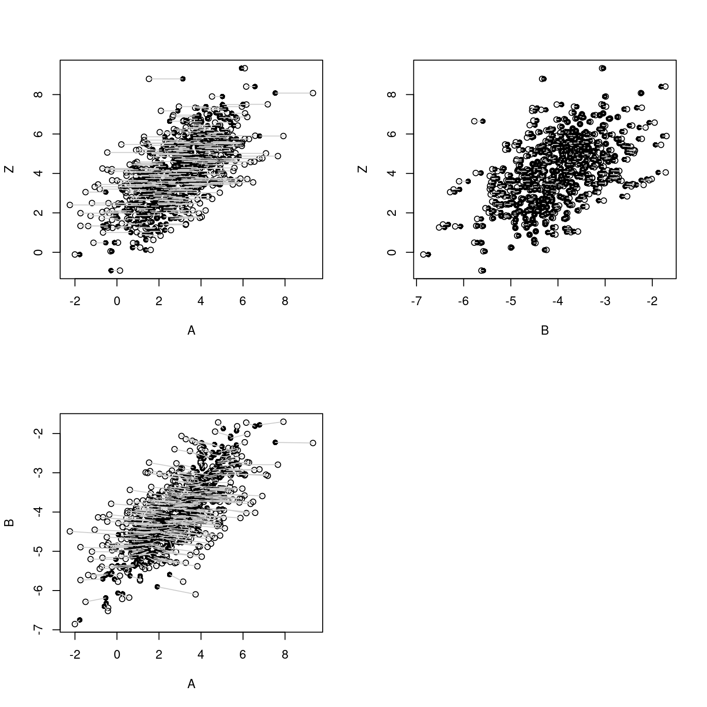
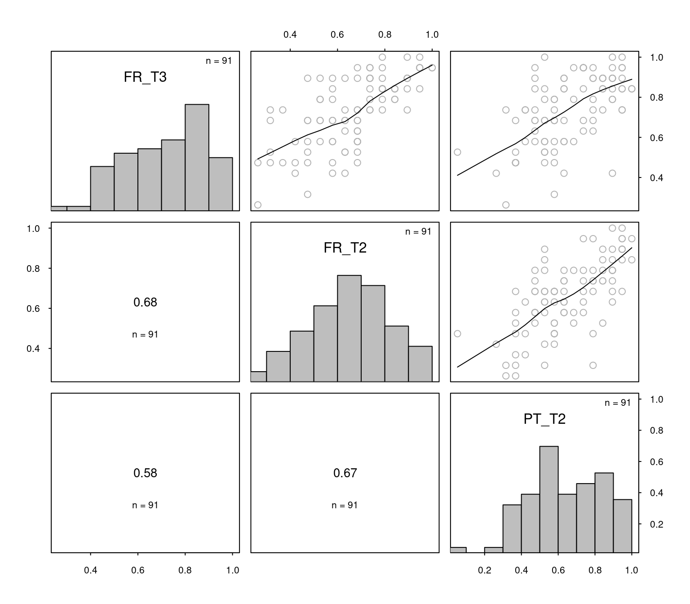
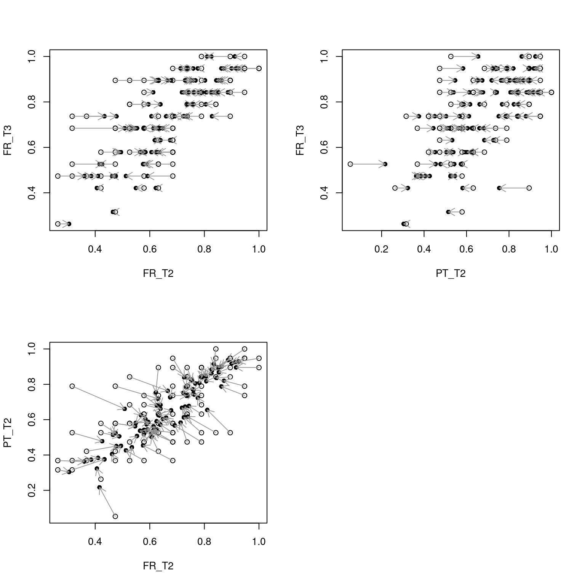

library(tidyverse)
library(cmdstanr) # for fitting Bayesian models, v. 2.32.2
library(posterior) # for working with posterior distributions
# For drawing scatterplot matrices
source("https://janhove.github.io/RCode/scatterplot_matrix.R")
# Set random seed for reproducibility
set.seed(2020-01-21, kind = "Mersenne-Twister")Baby steps in Bayes: Accounting for measurement error on a control variable
R
Stan
Bayesian statistics
measurement error
correlational studies
In observational studies, it is customary to account for confounding variables by including measurements of them in the statistical model. This practice is referred to as statistically controlling for the confounding variables. An underappreciated problem is that if the confounding variables were measured imperfectly, then statistical control will be imperfect as well, and the confound won’t be eradicated entirely (see Berthele & Vanhove 2017; Brunner & Austin 2009; Westfall & Yarkoni 2016) (see also Controlling for confounding variables in correlational research: Four caveats).
This blog post details my efforts to specify a Bayesian model in which the measurement error on the confounding variable was taken into account. The ultimate aim was to obtain more honest estimates of the impact of the confounding variable and the variable of actual interest on the outcome. First, I’ll discuss a simulated example to demonstrate the consequences of measurement error on statistical control and what a model needs to do to appropriately take measurement error into account. Then I apply the insights gained on a real-life study in applied linguistics.
I will preface all of this with the disclaimer that I don’t consider myself an expert in the techniques discussed below; one reason for writing this blog is to solicit feedback from readers more knowledgeable than I am.
Preliminaries
Update (2023-08-06): When converting this blog from Jekyll/Bootstrap to Quarto, I noticed that the original code used in this blog post, which involved the R package rstan has started to run very slowly. In the present version, I use cmdstanr instead.
If you want to follow along, you need the following R packages/settings:
You’ll also need the MASS package, but you don’t need to load it.
Demonstration: Measurement error messes up statistical control
Let’s first illustrate the problem that measurement error causes for statistical control using simulated data. That way, we know what goes into the data and what we hope a model should take out of it.
The scenario I want to focus on is the following. You are pretty sure that a given construct A causally affects a variable Z. You are, however, interested in finding out if another construct B also affects Z. You can’t manipulate any of the variables, so you have to make do with an observational study. Unfortunately, A and B are likely to be correlated. Let’s simulate some data to make this more concrete:
- 500 datapoints (
n) - Constructs
AandBare correlated at \(\rho = 0.73\). - Constructs
AandBare normally distributed with standard deviations of 1.5 (sd_A) and 0.8 (sd_B), respectively. The means of these normal distributions are 3 and -4, respectively.
The numbers in the list above aren’t special; I just wanted to make sure the model I will specify further down below isn’t restricted to assuming that the constructs are distributed normally with mean 0 and standard deviation 1.
# Generate correlated constructs
n <- 500
rho <- 0.73
sd_A <- 1.5
sd_B <- 0.8
# Given the correlation and the standard deviations,
# construct the covariance matrix for the constructs like so:
latent_covariance_matrix <- rbind(c(sd_A, 0), c(0, sd_B)) %*%
rbind(c(1, rho), c(rho, 1)) %*%
rbind(c(sd_A, 0), c(0, sd_B))
# Draw data from the multivariate normal distribution:
constructs <- MASS::mvrnorm(n = n, mu = c(3, -4)
, Sigma = latent_covariance_matrix)
A <- constructs[, 1]
B <- constructs[, 2]For the purposes of this simulation, I’ll generate data for Z that are affected by A but not by B:
# A influences Z, B doesn't
Z <- 2 + 0.7*A + rnorm(n, sd = 1.3)As Figure 1 shows, B and Z are correlated, even though neither influences the other. This is because of their link with A.
scatterplot_matrix(cbind(Z, A, B))
Z isn’t causally affected by construct B, there exists a considerable correlation between B and Z. This correlation exists because Z is causally affected by construct A, which is correlated with B.In situations such as these, researchers typically include both A and B as predictors in a model with Z as the outcome. And this works: we find a significant relationship between A and Z, but not between B and Z. Moreover, all estimated parameters are in the vicinity of their true values, as specified in the simulation.
summary(lm(Z ~ A + B))$coefficients Estimate Std. Error t value Pr(>|t|)
(Intercept) 2.881 0.5439 5.30 1.78e-07
A 0.609 0.0546 11.14 6.93e-26
B 0.146 0.1025 1.43 1.54e-01But in real life, the situation is more complicated. When researchers “statistically control” for a possible confound, they’re usually interested in controlling for the confounding construct rather than for any one measurement of this construct. For instance, when teasing apart the influences of L2 vocabulary knowledge and L2 morphosyntactic knowledge on L2 speaking fluency, researchers don’t actually want to control for the learners performance on this or that vocabulary test: they want to control for L2 vocabulary knowledge itself. One would hope that the vocabulary test gives a good indication of the learners’ vocabulary knowledge, but it’s understood that their performance will be affected by other factors as well (e.g., form on the day, luck with guessing, luck with the words occurring in the test etc.).
So let’s add some noise (measurement error) to constructs A and B. Here I express the measurement error in terms of the reliability of the instruments used to measure the constructs: If \(\sigma_A\) is the standard deviation of the unobserved construct scores and \(r_{AA'}\) is the reliability of the measurement instrument, then the standard deviation of the measurement error is \(\sqrt{\frac{\sigma_A^2}{r_{AA'}} - \sigma_A^2}\). For the purposes of this demonstration, I’m going to specify that construct A was measured with ‘okay’ reliability (0.70), whereas construct B was measured with exceptional reliability (0.95):
obs_A <- A + rnorm(n = n, sd = sqrt(sd_A^2/0.70 - sd_A^2))
obs_B <- B + rnorm(n = n, sd = sqrt(sd_B^2/0.95 - sd_B^2))Crucially, if we include the observed values obs_A and obs_B as predictors in a model with Z as the outcome, we find that the parameter for obs_B is significant—even though there is no causal link between B and Z:
summary(lm(Z ~ obs_A + obs_B))$coefficients Estimate Std. Error t value Pr(>|t|)
(Intercept) 4.842 0.4557 10.63 6.68e-24
obs_A 0.364 0.0418 8.71 4.36e-17
obs_B 0.456 0.0911 5.01 7.66e-07Descriptively, this is perfectly fine: You do indeed now know more about Z if you take into account obs_B in addition to obs_A. But you take this to interpret that the construct of B can explain variation in Z over and beyond that which can be explained by the construct of A, this would be a mistake.
Conceptually, what has happened is that since obs_A imperfectly reflects construct A, including obs_A in the model control for construct A imperfectly.
Fitting a model that takes measurement into account
Below is the Stan code I used for fitting the simulated data. The model takes as its input the three observed variables (obs_A, obs_B and Z). Information about the reliability of obs_A and obs_B is also provided in the form of a prior distribution on reliability_A and reliability_B. Specifically, it’s assumed that the reliability coefficient for obs_A is drawn from a beta(30, 10)-distribution. This assigns a 95% probability to the reliability coefficient lying between roughly 0.61 and 0.87. obs_B is assumed to be measured more reliably, as encoded by a beta(95, 5)-distribution, which assigns a 95% probability to the reliability coefficient lying between 0.90 and 0.98.
Importantly, as I noted in some earlier explorations, the model has to take into account the possibility that the constructs of A and B are correlated. I specified a prior vaguely expecting a positive correlation but that wouldn’t find correlations close to or below zero to be too surprising either. Priors on the other parameters are pretty vague; I find it difficult to come up with reasonable priors in context-free examples.
meas_error_code <- '
data {
// Number of observations
int<lower = 1> N;
// Observed outcome
vector[N] Z;
// Observed predictors
vector[N] obs_A;
vector[N] obs_B;
}
parameters {
// Parameters for regression
real intercept;
real slope_A;
real slope_B;
real<lower = 0> sigma;
// standard deviations of latent variables (= constructs)
real<lower = 0> sigma_lat_A;
real<lower = 0> sigma_lat_B;
// Unknown but estimated reliabilities
real<lower = 0, upper = 1> reliability_A;
real<lower = 0, upper = 1> reliability_B;
// Means of latent predictors
row_vector[2] latent_means;
// Unknown correlation between latent predictors
real<lower = -1, upper = 1> latent_rho;
// Latent variables
matrix[N, 2] latent_variables;
}
transformed parameters {
vector[N] mu_Z; // conditional mean of outcome
vector[N] lat_A; // latent variables, separated out
vector[N] lat_B;
real error_A; // standard error of measurement
real error_B;
// standard deviations of latent variables, in matrix form
matrix[2, 2] sigma_lat;
// correlation and covariance matrix for latent variables
cov_matrix[2] latent_cor;
cov_matrix[2] latent_cov;
// Standardised slopes for A and B
real slope_A_std;
real slope_B_std;
// Express measurement error in terms of
// standard deviation of constructs and reliability
error_A = sqrt(sigma_lat_A^2/reliability_A - sigma_lat_A^2);
error_B = sqrt(sigma_lat_B^2/reliability_B - sigma_lat_B^2);
// Define diagonal matrix with standard errors of latent variables
sigma_lat[1, 1] = sigma_lat_A;
sigma_lat[2, 2] = sigma_lat_B;
sigma_lat[1, 2] = 0;
sigma_lat[2, 1] = 0;
// Define correlation matrix for latent variables
latent_cor[1, 1] = 1;
latent_cor[2, 2] = 1;
latent_cor[1, 2] = latent_rho;
latent_cor[2, 1] = latent_rho;
// Compute covariance matrix for latent variables
latent_cov = sigma_lat * latent_cor * sigma_lat;
// Extract latent variables from matrix
lat_A = latent_variables[, 1];
lat_B = latent_variables[, 2];
// Regression model
mu_Z = intercept + slope_A*lat_A + slope_B*lat_B;
// Standardised regression parameters
slope_A_std = slope_A * sigma_lat_A;
slope_B_std = slope_B * sigma_lat_B;
}
model {
// Priors for regression parameters
intercept ~ normal(0, 2);
slope_A ~ normal(0, 2);
slope_B ~ normal(0, 2);
sigma ~ normal(0, 2);
// Prior for reliabilities
reliability_A ~ beta(30, 10); // assume this has been estimated using some metric to be
// roughly 0.78, but with considerable uncertainty
reliability_B ~ beta(95, 5); // assume this has been estimated using exceptional reliability
// Prior for latent means
latent_means ~ normal(0, 3);
// Prior for latent standard deviations
sigma_lat_A ~ normal(0, 2);
sigma_lat_B ~ normal(0, 2);
// Prior expectation for correlation between latent variables:
// tend towards positive rho
latent_rho ~ normal(0.4, 0.3);
// Distribution of latent variable
for (i in 1:N) {
latent_variables[i, ] ~ multi_normal(latent_means, latent_cov);
}
// Measurement model
obs_A ~ normal(lat_A, error_A);
obs_B ~ normal(lat_B, error_B);
// Generate outcome
Z ~ normal(mu_Z, sigma);
}
'Let’s put the data into a Stan-friendly list and fit the model:
data_list <- list(
Z = Z,
obs_A = obs_A,
obs_B = obs_B,
N = n
)meas_error_model <- cmdstan_model(write_stan_file(meas_error_code))
model_fit <- meas_error_model$sample(
data = data_list
, seed = 123
, chains = 4
, parallel_chains = 4
, iter_warmup = 2000
, iter_sampling = 2000
, refresh = 500
, max_treedepth = 15
, adapt_delta = 0.95
)Running MCMC with 4 parallel chains...
Chain 1 Iteration: 1 / 4000 [ 0%] (Warmup)
Chain 2 Iteration: 1 / 4000 [ 0%] (Warmup)
Chain 3 Iteration: 1 / 4000 [ 0%] (Warmup)
Chain 4 Iteration: 1 / 4000 [ 0%] (Warmup)
Chain 1 Iteration: 500 / 4000 [ 12%] (Warmup)
Chain 4 Iteration: 500 / 4000 [ 12%] (Warmup)
Chain 3 Iteration: 500 / 4000 [ 12%] (Warmup)
Chain 2 Iteration: 500 / 4000 [ 12%] (Warmup)
Chain 1 Iteration: 1000 / 4000 [ 25%] (Warmup)
Chain 3 Iteration: 1000 / 4000 [ 25%] (Warmup)
Chain 4 Iteration: 1000 / 4000 [ 25%] (Warmup)
Chain 2 Iteration: 1000 / 4000 [ 25%] (Warmup)
Chain 1 Iteration: 1500 / 4000 [ 37%] (Warmup)
Chain 3 Iteration: 1500 / 4000 [ 37%] (Warmup)
Chain 4 Iteration: 1500 / 4000 [ 37%] (Warmup)
Chain 2 Iteration: 1500 / 4000 [ 37%] (Warmup)
Chain 1 Iteration: 2000 / 4000 [ 50%] (Warmup)
Chain 1 Iteration: 2001 / 4000 [ 50%] (Sampling)
Chain 3 Iteration: 2000 / 4000 [ 50%] (Warmup)
Chain 3 Iteration: 2001 / 4000 [ 50%] (Sampling)
Chain 4 Iteration: 2000 / 4000 [ 50%] (Warmup)
Chain 4 Iteration: 2001 / 4000 [ 50%] (Sampling)
Chain 2 Iteration: 2000 / 4000 [ 50%] (Warmup)
Chain 2 Iteration: 2001 / 4000 [ 50%] (Sampling)
Chain 1 Iteration: 2500 / 4000 [ 62%] (Sampling)
Chain 3 Iteration: 2500 / 4000 [ 62%] (Sampling)
Chain 2 Iteration: 2500 / 4000 [ 62%] (Sampling)
Chain 3 Iteration: 3000 / 4000 [ 75%] (Sampling)
Chain 4 Iteration: 2500 / 4000 [ 62%] (Sampling)
Chain 1 Iteration: 3000 / 4000 [ 75%] (Sampling)
Chain 2 Iteration: 3000 / 4000 [ 75%] (Sampling)
Chain 3 Iteration: 3500 / 4000 [ 87%] (Sampling)
Chain 1 Iteration: 3500 / 4000 [ 87%] (Sampling)
Chain 4 Iteration: 3000 / 4000 [ 75%] (Sampling)
Chain 3 Iteration: 4000 / 4000 [100%] (Sampling)
Chain 3 finished in 283.6 seconds.
Chain 2 Iteration: 3500 / 4000 [ 87%] (Sampling)
Chain 1 Iteration: 4000 / 4000 [100%] (Sampling)
Chain 1 finished in 311.5 seconds.
Chain 4 Iteration: 3500 / 4000 [ 87%] (Sampling)
Chain 2 Iteration: 4000 / 4000 [100%] (Sampling)
Chain 2 finished in 330.5 seconds.
Chain 4 Iteration: 4000 / 4000 [100%] (Sampling)
Chain 4 finished in 349.7 seconds.
All 4 chains finished successfully.
Mean chain execution time: 318.8 seconds.
Total execution time: 349.9 seconds.I’ve turn off warning notifications for this blog post, but I did receive this one:
Warning: 4 of 4 chains had an E-BFMI less than 0.2. See https://mc-stan.org/misc/warnings for details.
The mc-stan website does indeed contain some advice, but I’m going to ignore this warning for the time being and get on with the blog post.
That said, all estimated parameters are pretty much on the money. Importantly, include the estimated slope for the B construct (slope_B: -0.09, with a 95% credible interval of [-0.66, 0.33]). Notice, too, that the model was able to figure out the correlation between the latent constructs A and B (latent_rho).
model_fit$summary(
variables = c("intercept", "slope_A", "slope_B", "sigma"
,"sigma_lat_A", "sigma_lat_B"
, "latent_means", "latent_rho"
, "slope_A_std", "slope_B_std"
, "reliability_A", "reliability_B")
, "mean", "sd"
, extra_quantiles = ~posterior::quantile2(., probs = c(0.025, 0.975))
, "rhat"
)# A tibble: 13 × 6
variable mean sd q2.5 q97.5 rhat
<chr> <num> <num> <num> <num> <num>
1 intercept 1.25 1.63 -2.38 3.92 1.01
2 slope_A 0.782 0.185 0.483 1.20 1.02
3 slope_B -0.137 0.277 -0.750 0.316 1.01
4 sigma 1.21 0.0742 1.05 1.35 1.01
5 sigma_lat_A 1.55 0.0850 1.39 1.72 1.01
6 sigma_lat_B 0.828 0.0279 0.775 0.883 1.00
7 latent_means[1] 2.90 0.0830 2.74 3.07 1.00
8 latent_means[2] -4.01 0.0370 -4.08 -3.93 1.00
9 latent_rho 0.775 0.0465 0.680 0.861 1.01
10 slope_A_std 1.21 0.249 0.792 1.76 1.01
11 slope_B_std -0.114 0.230 -0.620 0.262 1.01
12 reliability_A 0.705 0.0618 0.593 0.829 1.01
13 reliability_B 0.950 0.0209 0.903 0.984 1.01To get some sense of what the model is doing, I’m going to extract the posterior distributions for the latent construct scores. These are the model’s guesses of which scores the simulated participants would have had if there had been no measurement error. These guesses are based on the information we’ve fed the model, including the observed variables, the relationships among them, and their probable reliability. I’m just going to work with the means of these posterior distributions, but there can be substantial uncertainty about the model’s guesses.
est_lat_A <- model_fit$draws("lat_A", format = "draws_matrix")
est_lat_B <- model_fit$draws("lat_B", format = "draws_matrix")
df_variables <- tibble(
Z = Z,
obs_A = obs_A,
obs_B = obs_B,
est_A = apply(est_lat_A, 2, mean),
est_B = apply(est_lat_B, 2, mean)
)Figure 2 shows the relationships among the three variables and shows shrinkage at work. For the variables about whose actual values there is uncertainty (viz., A and B), the model reckons that extreme values are caused by a combination of skill (or lack thereof) as well as good (or bad) luck. Accordingly, it adjusts these values towards the bulk of the data. In doing so, it takes into account both the correlation that we ‘expected’ between A and B as well as the possible relationship between A and B on the one hand and Z on the other. For A, the adjustments are fairly large because this variable was assumed to be measured with considerable error. For B, the adjustments are smaller. Z, finally, was assumed to be measured without error and so no adjustments are required.
par(mfrow = c(2, 2))
# Z vs. A
plot(Z ~ obs_A, df_variables, pch = 1,
xlab = "A", ylab = "Z")
points(Z ~ est_A, df_variables, pch = 16)
arrows(x0 = df_variables$obs_A, x1 = df_variables$est_A,
y0 = df_variables$Z,
col = "grey80", length = 0)
# Z vs. B
plot(Z ~ obs_B, df_variables, pch = 1,
xlab = "B", ylab = "Z")
points(Z ~ est_B, df_variables, pch = 16)
arrows(x0 = df_variables$obs_B, x1 = df_variables$est_B,
y0 = df_variables$Z,
col = "grey80", length = 0)
# B vs. A
plot(obs_B ~ obs_A, df_variables, pch = 1,
xlab = "A", ylab = "B")
points(est_B ~ est_A, df_variables, pch = 16)
arrows(x0 = df_variables$obs_A, x1 = df_variables$est_A,
y0 = df_variables$obs_B, y1 = df_variables$est_B,
col = "grey80", length = 0)
par(mfrow = c(1, 1))
In statistics at least, shrinkage is generally a good thing: The shrunken values (i.e., the model’s guesses) lie, on average, closer to the true but unobserved values than the observed values do. This is clearly the case for variable A:
mean(abs(A - obs_A))[1] 0.724mean(abs(A - df_variables$est_A))[1] 0.518For variable B, the difference is negligible seeing as this variable was measured with exceptional reliability:
mean(abs(B - obs_B))[1] 0.149mean(abs(B - df_variables$est_B))[1] 0.146A real-life example: Linguistic interdependence
For the simulated data, the model seemed to work okay, so let’s turn to a real-life example. I’ll skip the theoretical background, but several studies in applied linguistics have tried to find out if knowledge in a ‘heritage language’ contributes to the development of the societal language (For more information about such research, see Berthele & Lambelet (2017), Vanhove & Berthele (2017) and Berthele & Vanhove (2017)). In a typical research design, researchers collect data on a group of pupils’ language skills in their heritage language as well as in their societal languages at the beginning of the school year. Then, at the end of the school year, they collect similar data. Unsurprisingly, pupils with relatively good societal language skills at the beginning of the year are still relatively good at the end. But what is sometimes also observed is that heritage language proficiency at the first data collection is a predictor of societal language proficiency at the second data collection, even after taking into account societal language proficiency at the first data collection.
It’s tempting but premature to interpret such findings as evidence for a beneficial effect of heritage language skills on the development of societal language proficiency. The reason is that (a) societal and heritage language proficiency are bound to be correlated at the first data collection due to factors such as intelligence, testwiseness, form on the day etc., and (b) language proficiency is invariably measured with error. This is true of heritage language proficiency, but most importantly, it’s true of the variable that is “statistically controlled for”, i.e., societal language proficiency. Consequently, it’s likely that an off-the-shelf statistical model undercorrects for the role of societal language proficiency and overestimates the role of heritage language profiency.
So let’s fit a model that takes measurement error into account.
Data and question
The data we’re going to analyse are a subset of those analysed by Vanhove & Berthele (2017) and Berthele & Vanhove (2017). We have data on 91 pupils with French as their societal language and Portuguese as their heritage language. The study consisted of three data collections (and many more pupils), but we’re just going to analyse the reading proficiency data collected during waves 2 and 3 here.
The full datasets are are available as an R package from https://github.com/janhove/helascot, but copy-paste the command below into R to work with the reduced dataset we’ll work with here.
skills <- structure(list(
Subject = c("A_PLF_1","A_PLF_10","A_PLF_12","A_PLF_13","A_PLF_14","A_PLF_15","A_PLF_16","A_PLF_17","A_PLF_19","A_PLF_2","A_PLF_3","A_PLF_4","A_PLF_5","A_PLF_7","A_PLF_8","A_PLF_9","AA_PLF_11","AA_PLF_12","AA_PLF_13","AA_PLF_6","AA_PLF_7","AA_PLF_8","AD_PLF_10","AD_PLF_11","AD_PLF_13","AD_PLF_14","AD_PLF_15","AD_PLF_16","AD_PLF_17","AD_PLF_18","AD_PLF_19","AD_PLF_2","AD_PLF_20","AD_PLF_21","AD_PLF_22","AD_PLF_24","AD_PLF_25","AD_PLF_26","AD_PLF_4","AD_PLF_6","AD_PLF_8","AD_PLF_9","AE_PLF_1","AE_PLF_2","AE_PLF_4","AE_PLF_5","AE_PLF_6","C_PLF_1","C_PLF_16","C_PLF_19","C_PLF_30","D_PLF_1","D_PLF_2","D_PLF_3","D_PLF_4","D_PLF_5","D_PLF_6","D_PLF_7","D_PLF_8","Y_PNF_12","Y_PNF_15","Y_PNF_16","Y_PNF_17","Y_PNF_18","Y_PNF_2","Y_PNF_20","Y_PNF_24","Y_PNF_25","Y_PNF_26","Y_PNF_27","Y_PNF_28","Y_PNF_29","Y_PNF_3","Y_PNF_31","Y_PNF_32","Y_PNF_33","Y_PNF_34","Y_PNF_36","Y_PNF_4","Y_PNF_5","Y_PNF_6","Y_PNF_7","Y_PNF_8","Y_PNF_9","Z_PLF_2","Z_PLF_3","Z_PLF_4","Z_PLF_5","Z_PLF_6","Z_PLF_7","Z_PLF_8")
, FR_T2 = c(0.6842105263,0.4736842105,1,0.4210526316,0.6842105263,0.6842105263,0.8947368421,0.5789473684,0.7368421053,0.7894736842,0.4210526316,0.5263157895,0.3157894737,0.5263157895,0.6842105263,0.8421052632,0.3684210526,0.8421052632,0.7894736842,0.7894736842,0.6842105263,0.6315789474,0.6315789474,0.3684210526,0.4736842105,0.2631578947,0.4736842105,0.9473684211,0.3157894737,0.5789473684,0.2631578947,0.5263157895,0.5263157895,0.7368421053,0.6315789474,0.8947368421,0.6315789474,0.9473684211,0.7368421053,0.6315789474,0.7894736842,0.7894736842,0.4736842105,0.4736842105,0.9473684211,0.7894736842,0.3157894737,0.9473684211,1,0.7368421053,0.5789473684,0.8421052632,0.8421052632,0.7368421053,0.5789473684,0.6842105263,0.4736842105,0.4210526316,0.6842105263,0.8947368421,0.6842105263,0.7368421053,0.5263157895,0.5789473684,0.8947368421,0.7894736842,0.5263157895,0.6315789474,0.3157894737,0.7368421053,0.5789473684,0.6842105263,0.7368421053,0.5789473684,0.7894736842,0.6842105263,0.6315789474,0.6842105263,0.5789473684,0.7894736842,0.5789473684,0.7368421053,0.4736842105,0.8947368421,0.8421052632,0.7894736842,0.6315789474,0.6842105263,0.8947368421,0.6842105263,0.9473684211)
, PT_T2 = c(0.7368421053,0.5789473684,0.9473684211,0.5263157895,0.6315789474,0.5789473684,0.9473684211,0.4736842105,0.8421052632,0.5263157895,0.2631578947,0.6842105263,0.3684210526,0.3684210526,0.4736842105,0.8947368421,0.4210526316,0.5263157895,0.8947368421,0.8421052632,0.8947368421,0.8947368421,0.6315789474,0.3684210526,0.0526315789,0.3684210526,0.4210526316,0.9473684211,0.3157894737,0.4736842105,0.3157894737,0.5789473684,0.4736842105,0.7894736842,0.5263157895,0.8947368421,0.6315789474,0.7894736842,0.7368421053,0.5789473684,0.6842105263,0.7368421053,0.3684210526,0.7894736842,0.7368421053,0.4736842105,0.5263157895,1,0.8947368421,0.8947368421,0.4736842105,0.8421052632,1,0.6315789474,0.5263157895,0.5789473684,0.5789473684,0.5789473684,0.5263157895,0.9473684211,0.5263157895,0.6315789474,0.5789473684,0.6315789474,0.9473684211,0.7894736842,0.8421052632,0.5263157895,0.7894736842,0.4736842105,0.6842105263,0.3684210526,0.7894736842,0.7368421053,0.6315789474,0.9473684211,0.4210526316,0.5789473684,0.3684210526,0.8947368421,0.6315789474,0.8421052632,0.5789473684,0.5263157895,0.9473684211,0.8947368421,0.7368421053,0.4736842105,0.8421052632,0.7894736842,0.9473684211)
, FR_T3 = c(0.9473684211,0.3157894737,0.9473684211,0.5789473684,0.5789473684,0.6842105263,0.8421052632,0.6842105263,0.7368421053,0.8421052632,0.4210526316,0.5789473684,0.4736842105,0.6842105263,0.5789473684,0.7894736842,0.7368421053,0.7894736842,1,0.8421052632,0.8947368421,0.4210526316,0.8947368421,0.4736842105,0.5263157895,0.4736842105,0.5789473684,1,0.7368421053,0.8421052632,0.2631578947,0.7894736842,0.6842105263,0.8947368421,0.5263157895,0.8947368421,0.6842105263,0.9473684211,0.9473684211,0.5263157895,0.9473684211,0.8421052632,0.4736842105,0.8947368421,0.9473684211,0.7368421053,0.5263157895,0.8421052632,0.9473684211,0.7894736842,0.8947368421,0.8421052632,0.8421052632,0.8947368421,0.5789473684,0.7368421053,0.6842105263,0.4736842105,0.6842105263,0.8947368421,0.4736842105,0.8421052632,0.7894736842,0.5789473684,0.7368421053,0.7894736842,0.8947368421,0.6842105263,0.6842105263,0.9473684211,0.7894736842,0.5263157895,0.7368421053,0.6842105263,0.8421052632,0.7368421053,0.7368421053,0.5789473684,0.4736842105,0.8947368421,0.4210526316,0.8947368421,0.6842105263,1,0.8421052632,0.8421052632,0.6315789474,0.6315789474,0.8947368421,0.6315789474,0.9473684211)
, PT_T3 = c(0.8421052632,0.3684210526,0.9473684211,0.3157894737,0.5789473684,0.7894736842,1,0.5263157895,0.8421052632,0.7894736842,0.3157894737,0.6315789474,0.4210526316,0.5263157895,0.6842105263,0.8421052632,0.8947368421,0.6842105263,0.9473684211,0.8947368421,0.9473684211,0.8421052632,0.8421052632,0.5263157895,0.6842105263,0.5263157895,0.8421052632,0.9473684211,0.4210526316,0.7894736842,0.7894736842,0.8421052632,0.7368421053,1,0.6842105263,1,0.7894736842,0.8421052632,0.9473684211,0.6842105263,0.7894736842,0.7894736842,0.3157894737,0.7894736842,NA,0.6315789474,0.6842105263,0.9473684211,1,0.9473684211,0.7368421053,0.8947368421,0.8421052632,0.8421052632,0.5789473684,0.6315789474,0.6315789474,0.8421052632,0.7894736842,0.8421052632,0.5789473684,0.8421052632,0.7368421053,0.6842105263,0.8421052632,0.8421052632,0.9473684211,0.4736842105,0.8421052632,0.7894736842,0.7368421053,0.2105263158,0.7894736842,0.7894736842,0.7368421053,0.6315789474,0.6315789474,0.4210526316,0.6315789474,0.8421052632,0.6842105263,0.9473684211,0.5789473684,0.5263157895,0.7894736842,0.7894736842,0.7894736842,0.6842105263,0.8421052632,0.8421052632,0.8947368421)
)
, row.names = c(NA, -91L)
, class = c("tbl_df","tbl","data.frame")
)We’re going to fit the French reading scores at the third data collection (FR_T3) in terms of the French and Portuguese reading scores at the second data collection (FR_T2 and PT_T2). Figure 3 shows the observed variables. Note that all values are bounded between 0 and 1, where 1 was the highest possible result.
scatterplot_matrix(skills %>% select(FR_T3, FR_T2, PT_T2))
Fitting an off-the-shelf regression model, we find that PT_T2 is significantly related to FR_T3, even when accounting for FR_T2.
summary(lm(FR_T3 ~ FR_T2 + PT_T2, skills))$coefficients Estimate Std. Error t value Pr(>|t|)
(Intercept) 0.266 0.0520 5.11 1.84e-06
FR_T2 0.506 0.0990 5.11 1.84e-06
PT_T2 0.196 0.0868 2.26 2.60e-02Lastly, as reported by Pestana et al. (2017), the reliability of the French reading test at T2 was estimated to be 0.73, with a 95% confidence interval of [0.65, 0.78]. For Portuguese at T2, the reliability was estimated to be 0.79, with a 95% confidence interval of [0.72, 0.84]. This is information we can feed to the model. (For French at T3, the estimated reliability coefficient was 0.73, 95% CI: [0.65, 0.79], but for now, we’re not going to model the measurement error on the outcome variable.)
Model
The model specified below is essentially the same as the model for the simulated example, but with more informed priors.
The reliability estimates for the French T2 and Portuguese T2 variables were incorporated by means of prior distributions.
- For French T2, I put a
beta(73, 27)prior on the reliability coefficient, which assigns a 95% probability of the reliablity coefficient lying between 0.64 and 0.81. This doesn’t exactly correspond to the estimated reliability coefficient’s confidence interval, but I think it’s close enough. - For Portuguese T2, I put a
beta(79, 21)prior on the reliability coefficient, which assigns a 95% probability of the reliablity coefficient lying between 0.71 and 0.86.
Other prior distributions reflect the fact that the predictor and the outcome data were restricted to the [0, 1] range and some common knowledge. The rationale for them is explained in the comments sprinkled throughout the code.
interdependence_code <- '
data {
// Number of observations
int<lower = 1> N;
// Observed outcome
vector[N] FR_T3;
// Observed predictors
vector[N] FR_T2;
vector[N] PT_T2;
}
parameters {
// Parameters for regression
real intercept;
real slope_FR;
real slope_PT;
real<lower = 0> sigma;
// standard deviations of latent variables
real<lower = 0> sigma_lat_FR_T2;
real<lower = 0> sigma_lat_PT_T2;
// Unknown but estimated reliabilities
real<lower = 0, upper = 1> reliability_FR_T2;
real<lower = 0, upper = 1> reliability_PT_T2;
// Means of latent predictors
row_vector[2] latent_means;
// Unknown correlation between latent predictors
real<lower = -1, upper = 1> latent_rho;
// Latent variables
matrix[N, 2] latent_variables;
}
transformed parameters {
vector[N] mu_FR_T3; // conditional mean of outcome
vector[N] lat_FR_T2; // latent variables, separated out
vector[N] lat_PT_T2;
real error_FR_T2; // standard error of measurement
real error_PT_T2;
matrix[2, 2] sigma_lat; // standard deviations of latent variables, in matrix form
cov_matrix[2] latent_cor; // correlation and covariance matrix for latent variables
cov_matrix[2] latent_cov;
real slope_FR_std;
real slope_PT_std;
// Express measurement error in terms of
// standard deviation of constructs and reliability
error_FR_T2 = sqrt(sigma_lat_FR_T2^2/reliability_FR_T2 - sigma_lat_FR_T2^2);
error_PT_T2 = sqrt(sigma_lat_PT_T2^2/reliability_PT_T2 - sigma_lat_PT_T2^2);
// Define diagonal matrix with standard errors of latent variables
sigma_lat[1, 1] = sigma_lat_FR_T2;
sigma_lat[2, 2] = sigma_lat_PT_T2;
sigma_lat[1, 2] = 0;
sigma_lat[2, 1] = 0;
// Define correlation matrix for latent variables
latent_cor[1, 1] = 1;
latent_cor[2, 2] = 1;
latent_cor[1, 2] = latent_rho;
latent_cor[2, 1] = latent_rho;
// Compute covariance matrix for latent variables
latent_cov = sigma_lat * latent_cor * sigma_lat;
// Extract latent variables from matrix
lat_FR_T2 = latent_variables[, 1];
lat_PT_T2 = latent_variables[, 2];
// Regression model
mu_FR_T3 = intercept + slope_FR*lat_FR_T2 + slope_PT*lat_PT_T2;
// Standardised regression parameters
slope_FR_std = slope_FR * sigma_lat_FR_T2;
slope_PT_std = slope_PT * sigma_lat_PT_T2;
}
model {
// Priors for regression parameters; these essentially
// reflect the fact that the data lie in the [0, 1] interval.
// The intercept is for FR_T2 and PT_T2 = 0, so a pupil with
// poor scores at T2. So probably pretty low.
intercept ~ normal(0.20, 0.10);
// French at T2 is bound to positively predict French at T3,
// but the slope can at most be 1 (bounded data).
slope_FR ~ normal(0.50, 0.25);
// Portuguese at T2 is not necessarily a positive predictor of
// French at T3, given French at T2. So centre around 0.
slope_PT ~ normal(0, 0.25);
// If neither of the T2 variables predicts T3, uncertainty
// is highest when the mean T3 score is 0.5. Since these scores
// are bounded between 0 and 1, the standard deviation could not
// be much higher than 0.20. But French T2 is bound to be a predictor,
// so let us choose a slighlty lower value.
sigma ~ normal(0.15, 0.08);
// Prior reliabilities
reliability_FR_T2 ~ beta(73, 27); // alpha = 0.73, 95% CI [0.65, 0.78],
// which is roughly beta(73, 27)
reliability_PT_T2 ~ beta(79, 21); // alpha = 0.79, 95% CI [0.72, 0.84]
// Prior expectation for latent means, viz., the means
// for French and Portuguese T2. These are going to be in the 0.4-0.6
// range.
latent_means ~ normal(0.50, 0.10);
// Prior expectation for correlation between latent variables:
// tend towards positive rho; pretty vague;
latent_rho ~ normal(0.4, 0.3);
// Distribution of latent variable
for (i in 1:N) {
latent_variables[i, ] ~ multi_normal(latent_means, latent_cov);
}
// Measurement model
FR_T2 ~ normal(lat_FR_T2, error_FR_T2);
PT_T2 ~ normal(lat_PT_T2, error_PT_T2);
// Generate outcome
FR_T3 ~ normal(mu_FR_T3, sigma);
}
'data_list <- list(
FR_T2 = skills$FR_T2,
PT_T2 = skills$PT_T2,
FR_T3 = skills$FR_T3,
N = nrow(skills)
)interdependence_model <- cmdstan_model(write_stan_file(interdependence_code))
interdependence_fit <- interdependence_model$sample(
data = data_list
, seed = 42
, chains = 4
, parallel_chains = 4
, iter_warmup = 2000
, iter_sampling = 6000
, refresh = 1000
, max_treedepth = 12
, adapt_delta = 0.99
)Running MCMC with 4 parallel chains...
Chain 1 Iteration: 1 / 8000 [ 0%] (Warmup)
Chain 2 Iteration: 1 / 8000 [ 0%] (Warmup)
Chain 3 Iteration: 1 / 8000 [ 0%] (Warmup)
Chain 4 Iteration: 1 / 8000 [ 0%] (Warmup)
Chain 4 Iteration: 1000 / 8000 [ 12%] (Warmup)
Chain 1 Iteration: 1000 / 8000 [ 12%] (Warmup)
Chain 2 Iteration: 1000 / 8000 [ 12%] (Warmup)
Chain 3 Iteration: 1000 / 8000 [ 12%] (Warmup)
Chain 4 Iteration: 2000 / 8000 [ 25%] (Warmup)
Chain 4 Iteration: 2001 / 8000 [ 25%] (Sampling)
Chain 1 Iteration: 2000 / 8000 [ 25%] (Warmup)
Chain 1 Iteration: 2001 / 8000 [ 25%] (Sampling)
Chain 2 Iteration: 2000 / 8000 [ 25%] (Warmup)
Chain 2 Iteration: 2001 / 8000 [ 25%] (Sampling)
Chain 3 Iteration: 2000 / 8000 [ 25%] (Warmup)
Chain 3 Iteration: 2001 / 8000 [ 25%] (Sampling)
Chain 4 Iteration: 3000 / 8000 [ 37%] (Sampling)
Chain 1 Iteration: 3000 / 8000 [ 37%] (Sampling)
Chain 2 Iteration: 3000 / 8000 [ 37%] (Sampling)
Chain 3 Iteration: 3000 / 8000 [ 37%] (Sampling)
Chain 4 Iteration: 4000 / 8000 [ 50%] (Sampling)
Chain 1 Iteration: 4000 / 8000 [ 50%] (Sampling)
Chain 2 Iteration: 4000 / 8000 [ 50%] (Sampling)
Chain 3 Iteration: 4000 / 8000 [ 50%] (Sampling)
Chain 4 Iteration: 5000 / 8000 [ 62%] (Sampling)
Chain 1 Iteration: 5000 / 8000 [ 62%] (Sampling)
Chain 2 Iteration: 5000 / 8000 [ 62%] (Sampling)
Chain 3 Iteration: 5000 / 8000 [ 62%] (Sampling)
Chain 1 Iteration: 6000 / 8000 [ 75%] (Sampling)
Chain 4 Iteration: 6000 / 8000 [ 75%] (Sampling)
Chain 2 Iteration: 6000 / 8000 [ 75%] (Sampling)
Chain 3 Iteration: 6000 / 8000 [ 75%] (Sampling)
Chain 1 Iteration: 7000 / 8000 [ 87%] (Sampling)
Chain 2 Iteration: 7000 / 8000 [ 87%] (Sampling)
Chain 4 Iteration: 7000 / 8000 [ 87%] (Sampling)
Chain 3 Iteration: 7000 / 8000 [ 87%] (Sampling)
Chain 1 Iteration: 8000 / 8000 [100%] (Sampling)
Chain 1 finished in 119.3 seconds.
Chain 2 Iteration: 8000 / 8000 [100%] (Sampling)
Chain 2 finished in 119.8 seconds.
Chain 4 Iteration: 8000 / 8000 [100%] (Sampling)
Chain 4 finished in 120.4 seconds.
Chain 3 Iteration: 8000 / 8000 [100%] (Sampling)
Chain 3 finished in 124.1 seconds.
All 4 chains finished successfully.
Mean chain execution time: 120.9 seconds.
Total execution time: 124.2 seconds.After tweaking the adapt_delta and max_treedepth parameters and letting the model run for a sufficient number of iterations, it converged without errors or warnings.
Results
Compared to the off-the-shelf lm() model, the model that takes measurement errors and correlated predictors into account estimates the parameter for FR_T2 to be higher and that of PT_T2 to be lower. It is also more uncertain about these parameters than the off-the-shelf model, I think appropriately so. The slope for PT_T2, which is the important bit, is now estimated to be 0.10, with a 95% credible interval of [-0.17, 0.38]. So when you take measurement error into account, you find that there is less evidence for a beneficial effect of heritage language proficiency on the development of societal language proficiency that you could otherwise have thought. Moreover, the model estimates that the correlation between FR_T2 and PT_T2 is in the vicinity of 0.81 rather than 0.67, once measurement error has been accounted for.
interdependence_fit$summary(
variables = c("intercept", "slope_FR", "slope_PT", "sigma"
, "sigma_lat_FR_T2", "sigma_lat_PT_T2"
, "latent_means", "latent_rho"
, "reliability_FR_T2", "reliability_PT_T2")
, "mean", "sd"
, extra_quantiles = ~posterior::quantile2(., probs = c(0.025, 0.975))
, "rhat"
)# A tibble: 11 × 6
variable mean sd q2.5 q97.5 rhat
<chr> <num> <num> <num> <num> <num>
1 intercept 0.191 0.0536 0.0869 0.297 1.00
2 slope_FR 0.712 0.156 0.405 1.02 1.00
3 slope_PT 0.105 0.140 -0.169 0.382 1.00
4 sigma 0.116 0.0114 0.0941 0.139 1.00
5 sigma_lat_FR_T2 0.155 0.0122 0.133 0.181 1.00
6 sigma_lat_PT_T2 0.182 0.0141 0.157 0.212 1.00
7 latent_means[1] 0.653 0.0183 0.617 0.689 1.00
8 latent_means[2] 0.642 0.0210 0.601 0.683 1.00
9 latent_rho 0.813 0.0783 0.643 0.949 1.00
10 reliability_FR_T2 0.750 0.0392 0.670 0.823 1.00
11 reliability_PT_T2 0.790 0.0402 0.706 0.863 1.00Considerable shrinkage is observed for both predictors (Figure 4); keep in mind that we didn’t account for measurement error on the outcome. The plots in the top row shows how predictor values that are pretty low given a certain outcome value are shifted toward the right and how predictor values that are pretty high given a certain outcome value get shifted toward the left. The plot in the bottom row additionally shows that the model has learnt, among other things, that if a participant has a high PT_T2 score but a low FR_T2 score, that the former is probably an overestimate and the latter is likely an underestimate. So it adjusts both values towards the centre.
lat_FR_T2 <- interdependence_fit$draws("lat_FR_T2", format = "draws_matrix")
lat_PT_T2 <- interdependence_fit$draws("lat_PT_T2", format = "draws_matrix")
df_variables <- data.frame(
FR_T3 = skills$FR_T3,
FR_T2 = skills$FR_T2,
PT_T2 = skills$PT_T2,
est_FR_T2 = apply(lat_FR_T2, 2, mean),
est_PT_T2 = apply(lat_PT_T2, 2, mean)
)
par(mfrow = c(2, 2))
plot(FR_T3 ~ FR_T2, data = df_variables, pch = 1)
points(FR_T3 ~ est_FR_T2, data = df_variables, pch = 16)
arrows(x0 = df_variables$FR_T2, x1 = df_variables$est_FR_T2,
y0 = df_variables$FR_T3, y1 = df_variables$FR_T3,
col = "grey60", length = 0.1)
plot(FR_T3 ~ PT_T2, data = df_variables, pch = 1)
points(FR_T3 ~ est_PT_T2, data = df_variables, pch = 16)
arrows(x0 = df_variables$PT_T2, x1 = df_variables$est_PT_T2,
y0 = df_variables$FR_T3, y1 = df_variables$FR_T3,
col = "grey60", length = 0.1)
plot(PT_T2 ~ FR_T2, data = df_variables, pch = 1)
points(est_PT_T2 ~ est_FR_T2, data = df_variables, pch = 16)
arrows(x0 = df_variables$FR_T2, x1 = df_variables$est_FR_T2,
y0 = df_variables$PT_T2, y1 = df_variables$est_PT_T2,
col = "grey60", length = 0.1)
Caveats
- I’m just trying to figure out this stuff, so this blog posts comes with absolutely no warranties.
- We only took into account reliability and we took validity for granted. In the real-life example, this means that we acknowledged that the French reading test measured French reading proficiency imperfectly — but we did assume that it, deep down, measured French reading proficiency. You can easily imagine a test that measures something highly reliably, but that still doesn’t reflect what it’s supposed to measure well. (For instance, a highly reliable trivia quiz about the Belgian national football team under the reign of Georges Leekens that’s used to represent general intelligence.) Taking measurement error (in terms of unreliability) into account doesn’t fix possible validity problems.
Software versions
Please note that I reran the code on this page on August 6, 2023.
devtools::session_info()─ Session info ───────────────────────────────────────────────────────────────
setting value
version R version 4.3.1 (2023-06-16)
os Ubuntu 22.04.2 LTS
system x86_64, linux-gnu
ui X11
language en_US
collate en_US.UTF-8
ctype en_US.UTF-8
tz Europe/Zurich
date 2023-08-06
pandoc 3.1.1 @ /usr/lib/rstudio/resources/app/bin/quarto/bin/tools/ (via rmarkdown)
─ Packages ───────────────────────────────────────────────────────────────────
package * version date (UTC) lib source
abind 1.4-5 2016-07-21 [1] CRAN (R 4.3.1)
backports 1.4.1 2021-12-13 [1] CRAN (R 4.3.0)
cachem 1.0.6 2021-08-19 [2] CRAN (R 4.2.0)
callr 3.7.3 2022-11-02 [1] CRAN (R 4.3.1)
checkmate 2.2.0 2023-04-27 [1] CRAN (R 4.3.1)
cli 3.6.1 2023-03-23 [1] CRAN (R 4.3.0)
cmdstanr * 0.6.0 2023-08-02 [1] local
colorspace 2.1-0 2023-01-23 [1] CRAN (R 4.3.0)
crayon 1.5.2 2022-09-29 [1] CRAN (R 4.3.1)
data.table 1.14.8 2023-02-17 [1] CRAN (R 4.3.0)
devtools 2.4.5 2022-10-11 [1] CRAN (R 4.3.1)
digest 0.6.29 2021-12-01 [2] CRAN (R 4.2.0)
distributional 0.3.2 2023-03-22 [1] CRAN (R 4.3.1)
dplyr * 1.1.2 2023-04-20 [1] CRAN (R 4.3.0)
ellipsis 0.3.2 2021-04-29 [2] CRAN (R 4.2.0)
evaluate 0.15 2022-02-18 [2] CRAN (R 4.2.0)
fansi 1.0.4 2023-01-22 [1] CRAN (R 4.3.1)
farver 2.1.1 2022-07-06 [1] CRAN (R 4.3.0)
fastmap 1.1.0 2021-01-25 [2] CRAN (R 4.2.0)
forcats * 1.0.0 2023-01-29 [1] CRAN (R 4.3.0)
fs 1.5.2 2021-12-08 [2] CRAN (R 4.2.0)
generics 0.1.3 2022-07-05 [1] CRAN (R 4.3.0)
ggplot2 * 3.4.2 2023-04-03 [1] CRAN (R 4.3.0)
glue 1.6.2 2022-02-24 [2] CRAN (R 4.2.0)
gtable 0.3.3 2023-03-21 [1] CRAN (R 4.3.0)
hms 1.1.3 2023-03-21 [1] CRAN (R 4.3.0)
htmltools 0.5.5 2023-03-23 [1] CRAN (R 4.3.0)
htmlwidgets 1.6.2 2023-03-17 [1] CRAN (R 4.3.1)
httpuv 1.6.11 2023-05-11 [1] CRAN (R 4.3.1)
jsonlite 1.8.7 2023-06-29 [1] CRAN (R 4.3.1)
knitr 1.39 2022-04-26 [2] CRAN (R 4.2.0)
later 1.3.1 2023-05-02 [1] CRAN (R 4.3.1)
lifecycle 1.0.3 2022-10-07 [1] CRAN (R 4.3.0)
lubridate * 1.9.2 2023-02-10 [1] CRAN (R 4.3.0)
magrittr 2.0.3 2022-03-30 [1] CRAN (R 4.3.0)
MASS 7.3-60 2023-05-04 [4] CRAN (R 4.3.1)
matrixStats 1.0.0 2023-06-02 [1] CRAN (R 4.3.1)
memoise 2.0.1 2021-11-26 [2] CRAN (R 4.2.0)
mime 0.10 2021-02-13 [2] CRAN (R 4.0.2)
miniUI 0.1.1.1 2018-05-18 [1] CRAN (R 4.3.1)
munsell 0.5.0 2018-06-12 [1] CRAN (R 4.3.0)
pillar 1.9.0 2023-03-22 [1] CRAN (R 4.3.0)
pkgbuild 1.4.2 2023-06-26 [1] CRAN (R 4.3.1)
pkgconfig 2.0.3 2019-09-22 [2] CRAN (R 4.2.0)
pkgload 1.3.2.1 2023-07-08 [1] CRAN (R 4.3.1)
posterior * 1.4.1 2023-03-14 [1] CRAN (R 4.3.1)
prettyunits 1.1.1 2020-01-24 [2] CRAN (R 4.2.0)
processx 3.8.2 2023-06-30 [1] CRAN (R 4.3.1)
profvis 0.3.8 2023-05-02 [1] CRAN (R 4.3.1)
promises 1.2.0.1 2021-02-11 [1] CRAN (R 4.3.1)
ps 1.7.5 2023-04-18 [1] CRAN (R 4.3.1)
purrr * 1.0.1 2023-01-10 [1] CRAN (R 4.3.0)
R6 2.5.1 2021-08-19 [2] CRAN (R 4.2.0)
Rcpp 1.0.11 2023-07-06 [1] CRAN (R 4.3.1)
readr * 2.1.4 2023-02-10 [1] CRAN (R 4.3.0)
remotes 2.4.2 2021-11-30 [2] CRAN (R 4.2.0)
rlang 1.1.1 2023-04-28 [1] CRAN (R 4.3.0)
rmarkdown 2.21 2023-03-26 [1] CRAN (R 4.3.0)
rstudioapi 0.14 2022-08-22 [1] CRAN (R 4.3.0)
scales 1.2.1 2022-08-20 [1] CRAN (R 4.3.0)
sessioninfo 1.2.2 2021-12-06 [2] CRAN (R 4.2.0)
shiny 1.7.4.1 2023-07-06 [1] CRAN (R 4.3.1)
stringi 1.7.12 2023-01-11 [1] CRAN (R 4.3.1)
stringr * 1.5.0 2022-12-02 [1] CRAN (R 4.3.0)
tensorA 0.36.2 2020-11-19 [1] CRAN (R 4.3.1)
tibble * 3.2.1 2023-03-20 [1] CRAN (R 4.3.0)
tidyr * 1.3.0 2023-01-24 [1] CRAN (R 4.3.0)
tidyselect 1.2.0 2022-10-10 [1] CRAN (R 4.3.0)
tidyverse * 2.0.0 2023-02-22 [1] CRAN (R 4.3.1)
timechange 0.2.0 2023-01-11 [1] CRAN (R 4.3.0)
tzdb 0.4.0 2023-05-12 [1] CRAN (R 4.3.0)
urlchecker 1.0.1 2021-11-30 [1] CRAN (R 4.3.1)
usethis 2.2.2 2023-07-06 [1] CRAN (R 4.3.1)
utf8 1.2.3 2023-01-31 [1] CRAN (R 4.3.1)
vctrs 0.6.3 2023-06-14 [1] CRAN (R 4.3.0)
withr 2.5.0 2022-03-03 [2] CRAN (R 4.2.0)
xfun 0.39 2023-04-20 [1] CRAN (R 4.3.0)
xtable 1.8-4 2019-04-21 [1] CRAN (R 4.3.1)
yaml 2.3.5 2022-02-21 [2] CRAN (R 4.2.0)
[1] /home/jan/R/x86_64-pc-linux-gnu-library/4.3
[2] /usr/local/lib/R/site-library
[3] /usr/lib/R/site-library
[4] /usr/lib/R/library
──────────────────────────────────────────────────────────────────────────────